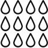
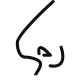
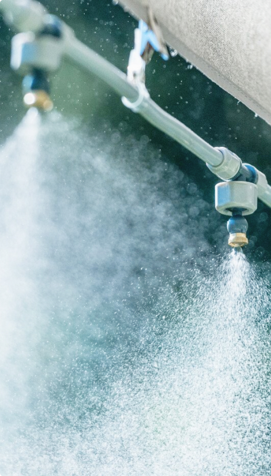

Решения для жизни - когда качество и комфорт важнее всего! С 2014 года устанавливаем системы туманообразования
Наши направления
Туманообразование на
производственных предприятиях
производственных предприятиях
В жаркое время года туман на летней площадке станет спасением для посетителей кафе и ресторанов.
Благодаря
туманообразующей системе снижается температура по всей территории распыления до оптимальных
показателей
Взять наше оборудование
в аренду
в аренду
В жаркое время года туман на летней площадке станет спасением для посетителей кафе и ресторанов.
Благодаря
туманообразующей системе снижается температура по всей территории распыления до оптимальных показателей
Установка в сфере животноводства
В жаркое время года туман на летней площадке станет спасением для посетителей кафе и ресторанов.
Благодаря
туманообразующей системе снижается температура по всей территории распыления до оптимальных показателей
Для кафе, ресторанов, летних площадок и террас
В жаркое время года туман на летней площадке станет спасением для посетителей кафе и ресторанов.
Благодаря
туманообразующей системе снижается температура по всей территории распыления до оптимальных показателей
Туманообразование для теплиц и оранжерей
В жаркое время года туман на летней площадке станет спасением для посетителей кафе и ресторанов.
Благодаря
туманообразующей системе снижается температура по всей территории распыления до оптимальных показателей
-
Увлажнение
-
Устранение пыли
-

Орошение
-

Отпугивание насекомых
-

Устранение запахов
Что дальше?

Познакомимся?
Алексей
Инженер-проектировщик
Руслан
Инженер-проектировщик
История компании Решения для жизни началась в 2014 году.
С самого момента создания компании, нашими главными приоритетами остается:
- Предоставление услуг по доставке, монтажу и проектированию систем туманообразования
- Обеспечение гарантийного и текущего ремонта, оформляем официальную гарантию на все виды предоставляемых нами услуг.
- Сдача в аренду профессионального туманообразующего оборудования
Каждый клиент всегда получает грамотную консультацию.
Для постоянных клиентов предлагаются приятные подарки и специальными скидки.
Наши работы
Ответим на все интересующие вас вопросы
Поможем подобрать систему туманообразования, проконсультируем, обсудим стоимость работ